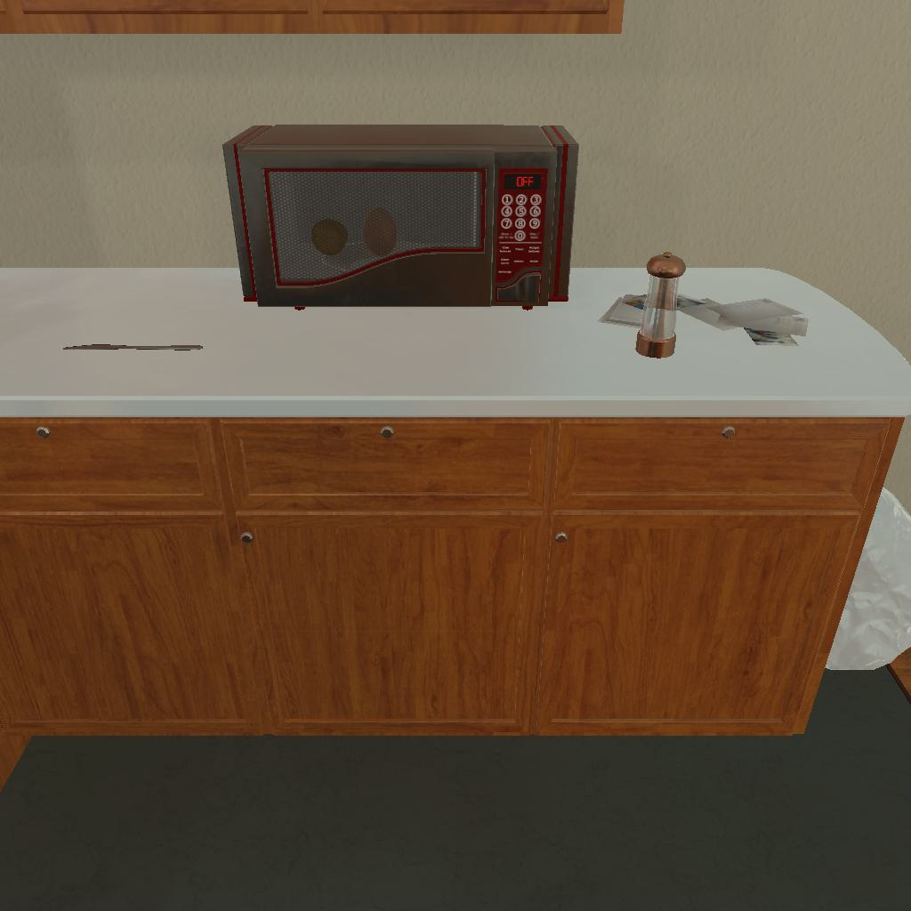

---------------------------------------------------------task: 17---------------------------------------------------------
--------------------------------------------------------------------------------------------------------------------------------------------------------------------
--------------------------------------------------------------------------------------------------------------------------------------------------------------------
Step:--------------------------------------------------------------------------8-------------------------------------------------------------------------------
----------------------------------------
VLM Prompt:
Image1:
Image2:
Image3:
**Instruction**
1. Analyze the provided images to identify all visible household objects and compare the difference between images (e.h. whether the object is opened or not and taken on hand or not), focusing on those relevant to the task description "put a cool pan in stoveburner."
2. Use the analysis of images and the task hint "The agent must find an object of the desired type, pick it up, go to a fridge, cool the object with the fridge, then find the correct location to place it, and put it down there. The agent does not need to use the fridge button or open the fridge to cool the object, and the agent just needs to do action that is "cool the object with the fridge"." to answer the question: what is the most reasonable action in the choices for the task description "put a cool pan in stoveburner"?
3. Decide and write the answer using the template: The answer is: (i): , where i is the real number. If there is no desired object in images, search every place based on **Initial Observation** to find the object. And if no one is exactly correct, choose a similar answer.
**Initial Observation**
You are in the middle of a room. Looking quickly around you, you can see cabinet (1-14), countertop (1-2), microwave (1), drawer (1-5), sink (1), sinkbasin (1), coffeemachine (1), stoveburner (1-4), toaster (1), fridge (1), diningtable (1), garbagecan (1), safe (1)
**Answer Choices**
(1): go to cabinet 2
(2): go to cabinet 3
(3): go to countertop 1
(4): go to cabinet 4
(5): go to cabinet 5
(6): go to microwave 1
(7): go to cabinet 6
(8): go to drawer 1
(9): go to drawer 2
(10): go to drawer 3
(11): go to cabinet 7
(12): go to cabinet 8
(13): go to sink 1
(14): go to sinkbasin 1
(15): go to coffeemachine 1
(16): go to cabinet 9
(17): go to cabinet 10
(18): go to drawer 4
(19): go to cabinet 11
(20): go to stoveburner 1
(21): go to stoveburner 2
(22): go to stoveburner 3
(23): go to stoveburner 4
(24): go to cabinet 12
(25): go to toaster 1
(26): go to drawer 5
(27): go to countertop 2
(28): go to fridge 1
(29): go to cabinet 13
(30): go to cabinet 14
(31): go to diningtable 1
(32): go to garbagecan 1
(33): go to safe 1
(34): open cabinet 1
(35): close cabinet 1
(36): examine cabinet 1
**Answer**
Let's think step by step by following the instructions.
----------------------------------------
----------------------------------------
Original Response:
First, we need to identify if there is a pan present in the provided images. Analyzing Image1, Image2, and Image3, we can observe the following objects:
- A microwave on the countertop.
- A metal object, possibly a coffee pot, on the countertop.
- Some papers or napkins beside the coffee pot.
- Wooden cabinets below the countertop.
There is no pan visible in any of the three images.
Given the task description "put a cool pan in stoveburner" and the task hint, we need to find a pan, cool it with the fridge, and then place it on a stoveburner. Since there is no pan in the images, we must search the places where a pan could be stored based on the initial observation.
Pans are typically found in cabinets or drawers in a kitchen. Among the answer choices, the ones that are most likely to contain a pan are the cabinets and drawers.
The most reasonable action would be to start searching the cabinets and drawers closest to the stoveburners, as pans are often stored near the cooking area for convenience. Therefore, the answer is to check cabinet or drawer options.
Reviewing the answer choices, the nearest cabinet or drawer to the stoveburners would be a logical place to start the search for a pan. Since the images do not specify which number corresponds to which cabinet or drawer, we must choose based on proximity to the stoveburners mentioned in the initial observation.
The answer is: (11): go to cabinet 7
----------------------------------------
----------------------------------------
>>> Refine Original VLM Response and Get Pure Action: go to cabinet 7
----------------------------------------
-----------------------------------------------------------------
Running time: 46.794296741485596 seconds
Total Money: 10.141310000000002
-----------------------------------------------------------------
-----------------------------------------------------------------
Text Observation:You arrive at loc 11. The cabinet 7 is closed.
-----------------------------------------------------------------
UNSUCCEED